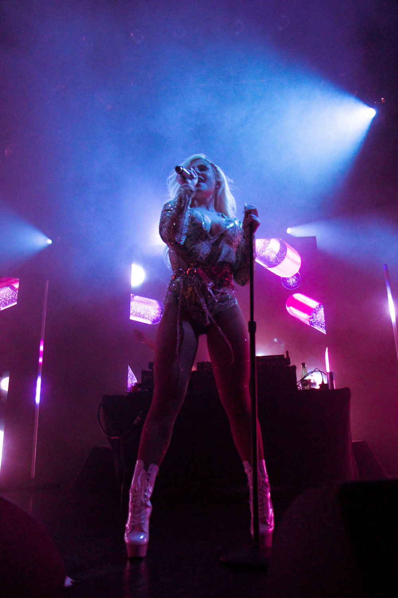

Catherine Slater (St. Louis, Missouri, EUA, 17 de Setembro de 1996), também conhecida como Slayyyter, é uma cantora e compositora americana. Ela começou a sua carreira musical independentemente no SoundCloud. O seu nome artístico era Slater, antes de mudar para Slayyyter. O seu single "Mine" alcançou o número 38 no iTunes pop chart.
Início de sua vida
Slayyyter é de Kirkwood, que fica em St. Louis, onde "viveu a sua vida toda". Ela frequentou escolas particulares e, mais tarde, continuou os seus estudos numa escola pública, onde foi "oferecida excelentes aulas de música pela primeira vez". Ela começou a fazer música no ensino médio usando o seu iPhone. Quando recebeu o seu primeiro computador e começou a faculdade, começou a gravar músicas que escrevia em ritmos que ela encontrava no SoundCloud. Ela declara que artistas como Britney Spears, Heidi Montag e Robyn tiveram um "enorme impacto" nela quando era mais jovem.
2017-2018: Abordagens iniciais da música e primeiros lançamentos
Slayyyter passou um ano na faculdade, estudando na Universidade do Missouri. Desta vez, ela iniciou sua carreira musical escrevendo "lo-fi pop dos anos 80" que ela mesma produziu e editou, mas nunca publicou. Mais tarde, ela desistiu da universidade e comprometeu-se totalmente na sua carreira musical. A sua colaboradora mais frequente, Ayesha Erotica, que é de Los Angeles. Os artistas se conheceram através do Twitter, onde Slayyyter desenvolveu um número de seguidores maior. Slayyter pretende se mudar para Los Angeles. Além do single de estréia de Slayyyter "BFF", os singles "Ghost", "Candy", "Alone", "Hello Kitty" (além de co-produção do colaborador frequente Boy Sim) e "All I Want for XXXmas" também surgiram da colaboração entre os dois artistas. Os lançamentos de 2018 de Slayyyter incluíram "I'm High" (produzido por GhostHaus) e "Platform Shoes" (produzido por Boy Sim).
2019: Singles, "The Mini Tour", and Slayyyter
Depois que um trecho de 14 segundos da música ganhar mais de 200 mil visualizações, "Mine" foi lançado no Dia dos Namorados e em menos de 24 horas alcançou o número 38 na parada pop do iTunes nos EUA. Em junho de 2019, Slayyyter embarcou na sua turnê de estreia que foi esgotada, intitulada "The Mini Tour". A turnê começou em 24 de junho em Nova Iorque e terminou em 27 de julho em St. Louis. Em 17 de setembro de 2019, Slayyyter lançou sua mixtape auto-intitulada, Slayyyter. A mixtape alcançou o 4º lugar no Pop Chart do iTunes dos EUA e o 14º no Album de Álbuns do iTunes dos EUA.